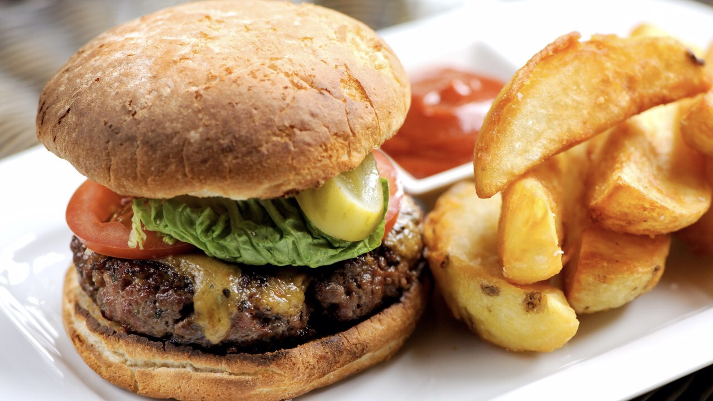
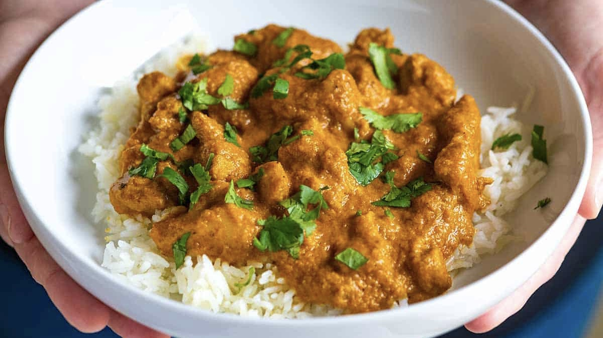

Sweet and Sour Chicken
Easy Prep 20 mins 2 £6.10
- Half a small pineapple
- 2 chicken breast
- 2 tablespoons of olive oil
- 1 onion cut into wedges
- 1 red pepper deseeded and chopped
- 1 green pepper deseeded and chopped
- 2 tablespoon of cornflour
- 4 spring onion trimmed and sliced
- 300ml of fresh pineapple juice
- 2 garlic cloves crushed
- 25g fresh root ginger peeled and finely grated
- 1 tablespoon of dark soy
- 2 tablespoons of white wine vinegar
- 2 tablespoons of brown sugar
- 3 tablespoon of ketchup
- 1 pinch of chilli flakes
- Black pepper
- To make the sauce, put the cornflour in a small bowl and stir in two tablespoons of the pineapple juice
until smooth. Put the remaining pineapple juice in a separate bowl and stir in the garlic, ginger, soy,
vinegar, sugar, ketchup and chilli flakes until thoroughly combined. Set aside.
- Put the pineapple on a board and cut off the skin. Cut the pineapple into thick slices and set aside. Cut
each chicken breast into 7-9 pieces.
- Heat the oil in a frying pan and stir-fry the onion and peppers for 3 minutes over a high heat. Coat the
chicken in the cornflour and add to the pan. Stir-fry for 4 minutes until lightly coloured.
- Add the pineapple and sweet and sour sauce to the pan with the chicken and bring to a simmer over a medium
heat. Cook for 4–5 minutes, stirring regularly until the chicken is cooked through and the pineapple is hot.
- Stir in the cornflour and pineapple solution mixture and cook for 30–60 seconds until the sauce is thickened
and glossy, turning the chicken and vegetables until nicely coated. Sprinkle with sliced spring onions and
serve hot
Beef Burger
Easy Prep 5 mins Cook 10 mins 2 £4.15

- 250g pack of beef mince
- 1 egg beaten
- 1 tablespoon of oil
- 2 bread buns
- Combination of lettuce, tomato, gherkin, cucumber etc
- tomato, mayo or mustard
- Potatoes for wedges
- Mix the mince and half the egg together. Season with salt and pepper.
- Divide the mixture into 2 and shape the burgers with your hands.
- Heat the oil in a frying pan. Add the burgers. Cook for 4-5 minute, then carefully turn them over. Cook for
a further 4-5 minutes.
- Using a fork, check to see if the burger is cooked. If not, turn down the heat and cook longer
- Put the burgers in the bread bun on top of the salad and sauce. Serve with wedges.
Chicken Curry
Easy Prep 25 mins 2 £5.20

- 2 tablespoons of oil
- 1 onion chopped
- 3 cloves of garlic finely chopped
- 1 potato cut into cubes
- Three quater mug of water
- 1 tablespoonnof mild curry paste
- 1 dessertspoon of flour
- 1 chicken stock cube
- Half a mug of natural yogurt
- Rice
- Heat the oil in a wok and fry the onion, garlic and potato.
- Cut the chicken breasts into pieces and add to the pan. Cook for 2-3 minutes until the chicken is no longer
pink on the outside.
- Add the flour and stir well. Add the water, curry paste and stock cube and stir well.
- Bring to the boil and then simmer for 7-8 minutes until the chicken and vegetables are cooked.
- Stir in the yogurt, but do not let it boil. Cook gently for 1 minute.
- Serve with rice.